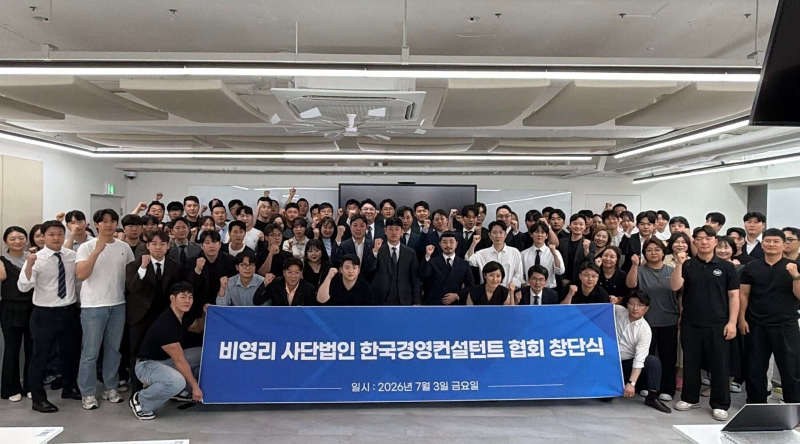

같은 회사인데 어디서 상담받느냐에 따라 결과가 달라집니다.
업력·업종·재문상태·대표자 조건까지 대조해
지금 우리 회사가 받을 수 있는 자금을 빠짐없이 정리해드립니다.
한 기관만 두드려보고 끝내지 않습니다. 해당되는 자금을 찾아 우선순위까지 정리해드립니다.
우리 회사 해당 자금 확인하기 →
한국정책자문센터는 비영리 사단법인 한국경영컨설턴트협회(KMCA) 소속으로, 컨설턴트 한 명의 역량에 기대지 않고 협회 차원의 검증된 전문가 네트워크를 기반으로 운영됩니다.
협회 소속이라는 것은 곧 자의적인 컨설팅이 아닌, 공식적인 심사와 윤리 기준 위에서 상담이 이루어진다는 의미입니다.
협회 홈페이지 바로가기 →"안 될 것 같은데요"라는 말로 끝내지 않습니다. 지금 조건에서 안 되면, 어떤 조건을 갖추면 되는지까지 알려드립니다.
기존 대출 한도가 찼어도 기관별 한도는 따로 운영됩니다. 보증기관 이원화, 시설자금 전환, 재무구조 개선 후 재신청까지 남은 경로를 검토합니다.
업종코드, 업력, 매출 규모, 대표자 연령까지 조건을 하나씩 대조해 해당되는 사업을 정리해드립니다. 소진공·지역신보 등 개인사업자 전용 자금도 함께 봅니다.
거절 사유부터 정확히 파악합니다. 재무 지표 때문인지, 서류 구성 때문인지, 기관 선택이 틀렸는지에 따라 다음 접근이 완전히 달라집니다.
자금·지원사업·투자·인증은 각각 받을 수 있는 시기가 정해져 있습니다. 순서를 설계해야 한도가 쌓입니다.
표준 설계안입니다. 실제 적용 단계·조달 가능 금액·지원사업 공고 일정은 기업의 재무 상태·업종·지역·연도별 공고에 따라 달라집니다.
우리 회사는 지금 어느 단계인지 진단받기 →말이 아니라 영상으로 확인하세요. 인스타그램에서 더 맞은 릴스를 보실 수 있습니다.
대부분의 상담은 "기보 한번 넣어보시죠"에서 끝납니다. 저희는 해당될 수 있는 경로를 전부 대조한 뒤, 승인 가능성이 높은 순서로 정리해드립니다.
중진공·기술보증기금·신용보증기금·소상공인시장진흥공단·지역신용보증재단까지, 기관마다 심사 기준과 한도가 다릅니다. 한 곳에서 막혁도 다른 경로가 열려 있는 경우가 많습니다.
부채비율, 이자보상배율, 자본잠식 여부, 매출 추이를 직접 계산해 지금 상태로 심사를 통과할 수 있는지 먼저 판단합니다. 무리한 신청으로 이력을 남기지 않습니다.
업종코드 하나로 지원 대상이 갈리는 사업이 많습니다. 제조업 코드 세팅, 업력 7년 기준, 대표자 연령 요건까지 확인해 놓치는 자금이 없게 합니다.
전국 단위 자금 외에도 17개 시도별로 별도 예산의 특화 지원사업이 운영됩니다. 소재지 기준으로 해당되는 공고를 함께 찾아드립니다.
벤처인증, 이노비즈, 기업부설연구소, 특허는 심사 가점으로 직결됩니다. 지금 취득 가능한 인증이 있다면 자금 신청 전에 먼저 준비하도록 안내합니다.
어떤 자금을 먼저 받느냐에 따라 이후 한도가 달라집니다. 한 번에 다 신청하는 게 아니라, 순서를 설계해 총 조달 가능액을 최대로 만듭니다.
예비창업자부터 업력 20년 기업까지 — 지금 단계에서 받을 수 있는 정책자금을 전담 심사역이 직접 진단합니다.
우리 회사가 해당되는 공고가 있는지, 상담 전에 먼저 확인해보세요. 기업마당·지자체 공고 기준 스냅샷이며 정기적으로 업데이트됩니다.
본 목록은 기업마당(bizinfo.go.kr)·각 지자체 공고를 기준으로 정리한 스냅샷입니다. 최신 공고와 정확한 마감일은 담당 기관에서 다시 확인하시기 바랍니다.
우리 회사 해당 공고 진단받기 →정책자금 상담만으로 끝나지 않습니다. 단계마다 필요해지는 영역을 같은 팀이 이어서 처리합니다.
회사 상황이 다른데 똑같은 방식으로만 접수하는 컨설팅들이 문제입니다.
저희는 기업마다 다른 재무 상황에 맞춰 진단부터 다르게 시작합니다.
진단부터 승인 이후 관리까지, 각 단계를 담당자가 직접 처리합니다.
카카오톡 채널로 문의 남겨주시면 가이드북을 보내드립니다. 정책자금 종류부터 심사에서 자주 놓치는 부분까지 정리해뒀습니다.
카카오톡에서 가이드북 받기 →